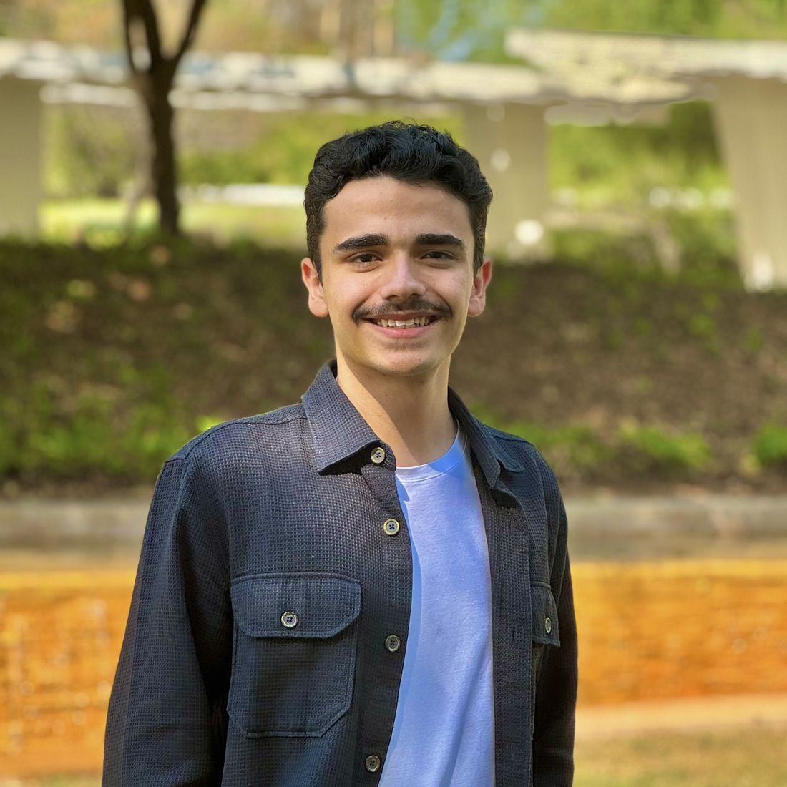
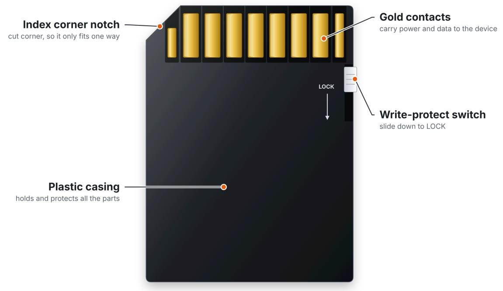
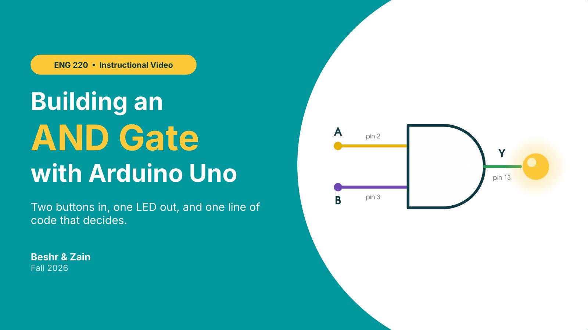

Expected May 2028
B.S. in Computer Engineering (Honors)
Hamad Bin Khalifa University, College of Science and Engineering | Doha, Qatar
Computer Engineering | AI Research | Debate

Computer Engineering (Honors) student at Hamad Bin Khalifa University
I’m in my third year at HBKU, and most of my work sits between AI research and software that people use every day. At Sina Labs I benchmarked Arabic language models on H200 GPUs, and at HBKU’s Health and Counselling Center I helped launch Enta Bikhair, a mental health screening tool used by more than 500 students.
Outside the lab I debate. I led HBKU’s Arabic Debate Club and won 3rd Best Speaker at the National Universities Debating Championship. This site collects my ENG 220 work from Fall 2026.
Final drafts from ENG 220. Select a square to open a project.
Mohamad Beshr Alsioufy
Expected May 2028
Hamad Bin Khalifa University, College of Science and Engineering | Doha, Qatar
2025
Sina Labs, Birzeit University
2025
Hamad Bin Khalifa University, Qatar Foundation
2024–2025
QatarDebate Center, Qatar Foundation
Sep 2024–Present
Hamad Bin Khalifa University, Qatar Foundation | Part-time
Jun–Aug 2025
CamelCode Academy | Part-time
Jan 2024–Apr 2025
Qatar Debate Center, Qatar Foundation | Part-time
Feb 2024–Present
Alsharq Youth Network
Sep 2024–Mar 2025
Hamad Bin Khalifa University
Jan–Mar 2025
Texas A&M University
May 2025
Academic excellence, Hamad Bin Khalifa University
Mar 2025
National Universities Debating Championship
Jan 2025
$10,000 awarded in recognition of academic excellence
Jun 2024
7th nationwide, Technology Track (high school)
Programming
Python, SQL, C
Tools & frameworks
PyTorch, TensorFlow, Pandas, NumPy, MATLAB, R, Power BI, Git, Linux, SLURM (HPC), CUDA
Languages
Arabic (native), English (advanced)
The fastest way to reach me is email.
MicroSD cards
MicroSD cards are small chips used to read and write data on electronic devices, such as laptops, cameras, and phones. They are mainly made out of plastic, with a small amount of metal, and they come in different colors and sizes. A microSD card is very small, only about 15 mm long, 11 mm wide, and 1 mm thick. It has four main parts: the index corner notch, the plastic casing, the gold contacts, and the write-protect switch, as shown in Figure 1.

The index corner notch is located on the top left corner of the microSD card. Its main purpose is to help users insert the card in the correct orientation. If we look at that corner in Figure 1, we notice that the card is chipped, so if the user attempts to insert it the wrong way, the index corner notch will prevent them from doing so. This also makes sure the gold contacts line up with the device.
The gold contacts hold the functionality of the device. They are the part responsible for communicating with electronic devices to store or transfer data. They are small, flat strips lined up in a row at the top of the card. When the card is inserted, these strips touch the pins inside the device's slot. They are made out of metal covered with a thin layer of gold.
The write-protect switch is a small slider on the right side of the card, and it has a very important function. When it is turned on (simply by sliding it down), it prevents the electronic device from writing data onto the card. The data can still be read, but nothing new can be saved and nothing can be deleted. It is mainly used for security reasons.
Finally, we have the plastic casing, which holds all the other parts together. It covers the memory chip inside the card and protects it from dust, water, and damage. It makes it easier for the user to hold the card and use it, as it is made out of plastic, which is very durable. It is usually black, with a label on the front.
Overall, the microSD card is a very helpful tool used to read and write data in so many electronic devices. It is made out of very simple and easy-to-produce components, which makes it durable and user-friendly. All four parts work together: the casing protects the card, the notch guides it into the slot, the contacts move the data, and the switch keeps the data safe.
My reflection on the process and the final product will be added here by Week 14.
Initializing a Git repository
This procedure explains how to set up a Git repository for a programming project. Git is a version control tool that keeps a record of every change made to a project, so you can see what changed, go back to an older version, or share your work with teammates. Setting up a repository is the first thing to do before using Git on any project.
These instructions are for students who have written code before but have not used Git. To complete this procedure, you need:
Open the terminal, type git --version and press Enter. If Git is installed, a version number such as git version 2.45.1 will appear. If you get an error saying the command is not recognized, install Git and then close and reopen the terminal.
Git saves your name and email with every change you make. Type git config --global user.name "Your Name" and press Enter, then type git config --global user.email "you@example.com" and press Enter. Replace the text inside the quotes with your own name and email.
Note: You only need to do this step once on each computer.
Use the cd command to move into your project folder, for example cd Documents/my-project. Type ls (or dir on Windows) to check that your project files are listed.
Caution: Make sure you are inside the project folder and not your Desktop or home folder. Otherwise, Git will try to track all of your personal files.
Type git init and press Enter. Git will reply with a message saying it initialized an empty Git repository. This creates a hidden folder called .git inside your project, which is where Git stores the project history.
Caution: Do not delete or edit the .git folder. Deleting it removes the entire history of the project.
Type git add . to select all the files in the folder, then type git commit -m "First commit" to save them. This saved version is called a commit. To confirm it worked, type git log. You should see your commit listed with your name, the date, and the message “First commit.”
Caution: Do not add files that contain passwords or private keys. Once they are committed, they stay in the project history even if you delete them later.
You have now set up a Git repository for your project. To complete the procedure, you checked that Git was installed, set your name and email, moved into the project folder, initialized the repository, and saved your first commit. From now on, you can repeat Step 5 whenever you make changes you want to save.
My reflection on the process and the final product will be added here by Week 14.
An AND gate on an Arduino Uno
The slides from our instructional video on building an AND gate with an Arduino Uno, made with my ENG 220 partner, Zain. Two push buttons are the inputs, an LED is the output, and one line of code makes the decision. Each slide shows the narration we wrote for it. Use the arrows or the thumbnails to move through the deck.

Hi, we're Zain and Beshr. In this video we'll show you how to build an AND gate with an Arduino Uno. Two push buttons are the inputs, one LED is the output, and by the end you'll be able to build and test it yourself.
My reflection on the process and the final product will be added here by Week 14.
In progress
The final draft of my innovation proposal will be posted here in Week 14.
Consulting workshop: breaking a case
This semester I attended a consulting workshop on how to break a case: how to take a business problem I had never seen before and turn it into a plan I could actually work through.